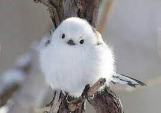
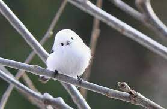
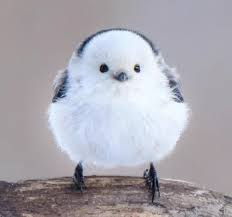

참새목 흰턱딱새과의 조류. 뱁새라고 불리며 이름은 오목눈이지만 사실 오목눈이와는 다른 분류군에 속한다. 이전에는 '붉은머리오목눈이과'라는 독자적인 분류군을 형성했으나 현재는 흰턱딱새과에 통합. 영어명이 다른 이유가 바로 이것이다.
Search한국에선 참새만큼 흔해서, 19개 공원에서 무려 2만 마리 이상이 발견되었다고 한다. 전국적으로는 훨씬 많을 것이다. 그만큼 흔해서 그런지, '뱁새가 황새 따라가다 가랑이 찢어진다.'는 속담에도 등장한다. 이런 녀석이 황새 옆에서 종종걸음을 하다 가랑이가 찢어질 것 같은 모습을 상상해보자. 워낙 귀여운 생김새 덕에 "뱁새야, 너는 황새 따라가지 마라."라는 말도 나왔을 정도다. 하지만 뱁새의 '작다'는 이미지 하나 때문에 눈이 찢어져 보이며 작은 사람을 뱁새눈이라고 부르는 표현이 있지만, 사실과 너무 다르다. 실제 뱁새의 눈은 동그랗기 때문에 뱁새눈이라 불리는 찢어진 눈과 전혀 다르다. 겨울에는 거의 항상 같은 종끼리 떼를 지어 다니며 덤불이나 키가 큰 풀 사이에 단체로 숨기를 좋아한다. 사람이 가까이 가면 단체로 숨느라 난리법석. 또, 나뭇가지 사이에서 이동할 때는 징검다리 건너듯이 가지를 하나하나 밟으며 이동한다. 윗쪽은 연한 갈색이고 아랫쪽은 진한 갈색이라 약간 차이가 있다. 암컷은 수컷보다 색이 연하다. 참새와 크기와 색깔이 비슷해서 대충 보면 참새인 줄로 알지만, 잘 살피면 금방 참새와 구분할 수 있다. 일단 참새보다 덜 시끄럽고 좀 더 동그랗다 싶으면 뱁새다.
한국에선 참새만큼 흔해서, 19개 공원에서 무려 2만 마리 이상이 발견되었다고 한다. 전국적으로는 훨씬 많을 것이다. 그만큼 흔해서 그런지, '뱁새가 황새 따라가다 가랑이 찢어진다.'는 속담에도 등장한다. 이런 녀석이 황새 옆에서 종종걸음을 하다 가랑이가 찢어질 것 같은 모습을 상상해보자. 워낙 귀여운 생김새 덕에 "뱁새야, 너는 황새 따라가지 마라."라는 말도 나왔을 정도다. 하지만 뱁새의 '작다'는 이미지 하나 때문에 눈이 찢어져 보이며 작은 사람을 뱁새눈이라고 부르는 표현이 있지만, 사실과 너무 다르다. 실제 뱁새의 눈은 동그랗기 때문에 뱁새눈이라 불리는 찢어진 눈과 전혀 다르다. 겨울에는 거의 항상 같은 종끼리 떼를 지어 다니며 덤불이나 키가 큰 풀 사이에 단체로 숨기를 좋아한다. 사람이 가까이 가면 단체로 숨느라 난리법석. 또, 나뭇가지 사이에서 이동할 때는 징검다리 건너듯이 가지를 하나하나 밟으며 이동한다. 윗쪽은 연한 갈색이고 아랫쪽은 진한 갈색이라 약간 차이가 있다. 암컷은 수컷보다 색이 연하다. 참새와 크기와 색깔이 비슷해서 대충 보면 참새인 줄로 알지만, 잘 살피면 금방 참새와 구분할 수 있다. 일단 참새보다 덜 시끄럽고 좀 더 동그랗다 싶으면 뱁새다.
한국에선 참새만큼 흔해서, 19개 공원에서 무려 2만 마리 이상이 발견되었다고 한다. 전국적으로는 훨씬 많을 것이다. 그만큼 흔해서 그런지, '뱁새가 황새 따라가다 가랑이 찢어진다.'는 속담에도 등장한다. 이런 녀석이 황새 옆에서 종종걸음을 하다 가랑이가 찢어질 것 같은 모습을 상상해보자. 워낙 귀여운 생김새 덕에 "뱁새야, 너는 황새 따라가지 마라."라는 말도 나왔을 정도다. 하지만 뱁새의 '작다'는 이미지 하나 때문에 눈이 찢어져 보이며 작은 사람을 뱁새눈이라고 부르는 표현이 있지만, 사실과 너무 다르다. 실제 뱁새의 눈은 동그랗기 때문에 뱁새눈이라 불리는 찢어진 눈과 전혀 다르다. 겨울에는 거의 항상 같은 종끼리 떼를 지어 다니며 덤불이나 키가 큰 풀 사이에 단체로 숨기를 좋아한다. 사람이 가까이 가면 단체로 숨느라 난리법석. 또, 나뭇가지 사이에서 이동할 때는 징검다리 건너듯이 가지를 하나하나 밟으며 이동한다. 윗쪽은 연한 갈색이고 아랫쪽은 진한 갈색이라 약간 차이가 있다. 암컷은 수컷보다 색이 연하다. 참새와 크기와 색깔이 비슷해서 대충 보면 참새인 줄로 알지만, 잘 살피면 금방 참새와 구분할 수 있다. 일단 참새보다 덜 시끄럽고 좀 더 동그랗다 싶으면 뱁새다.
